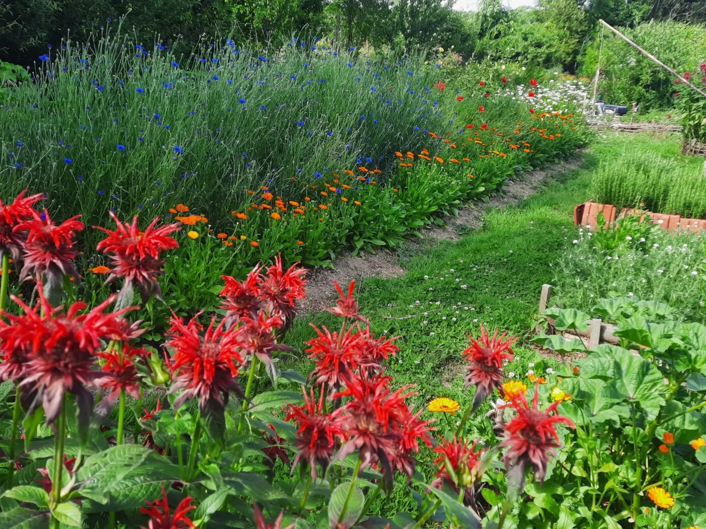
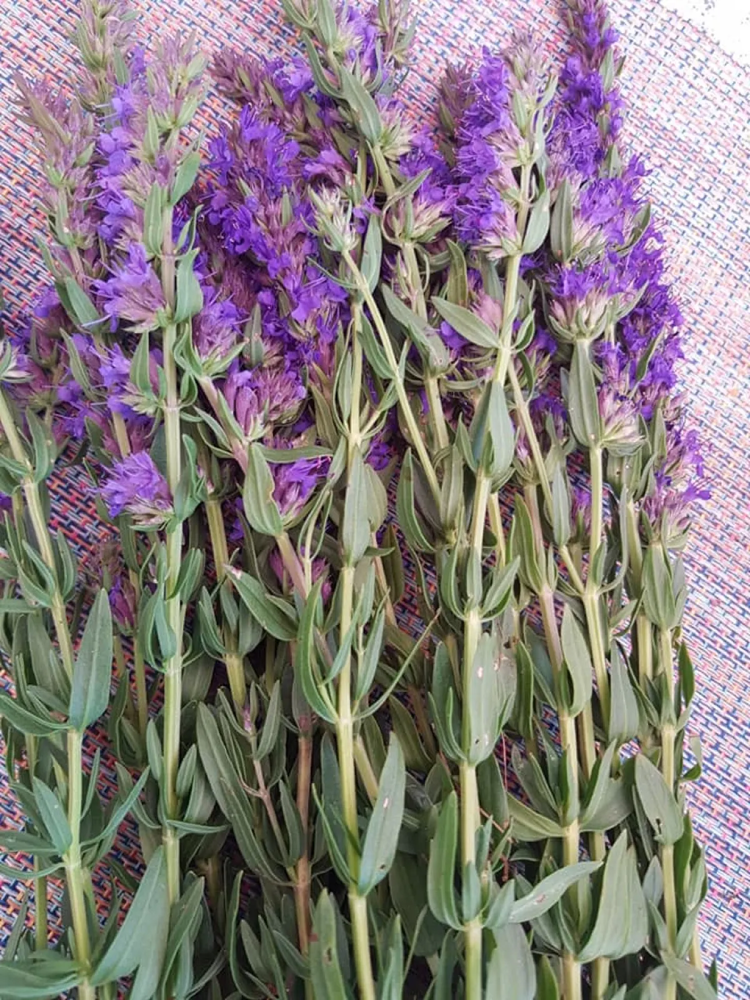
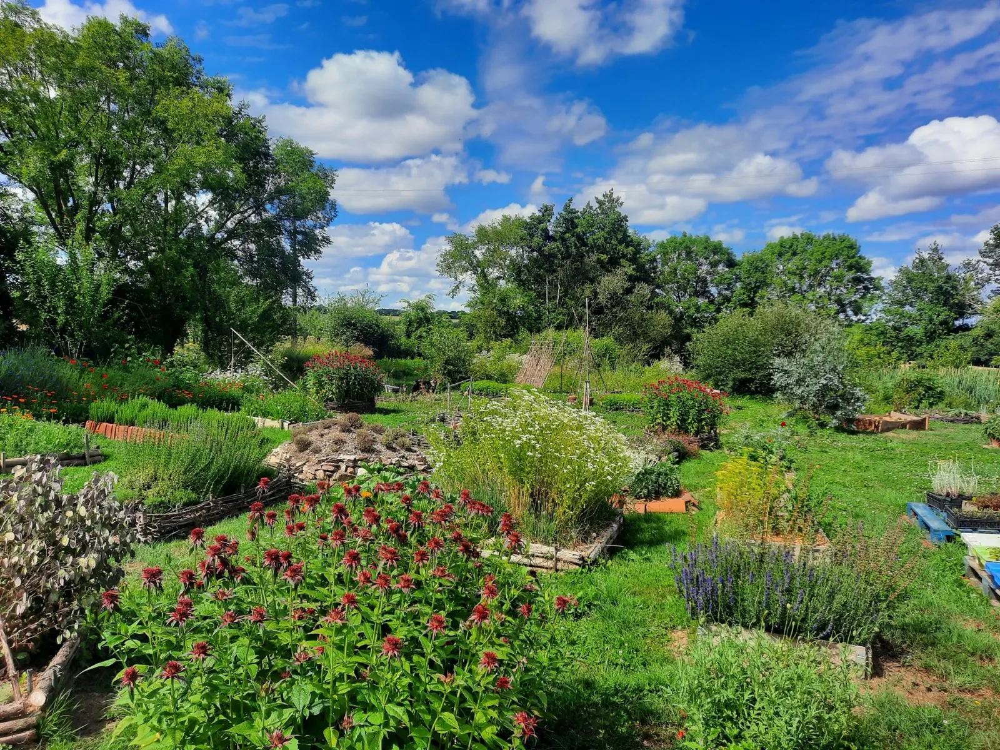
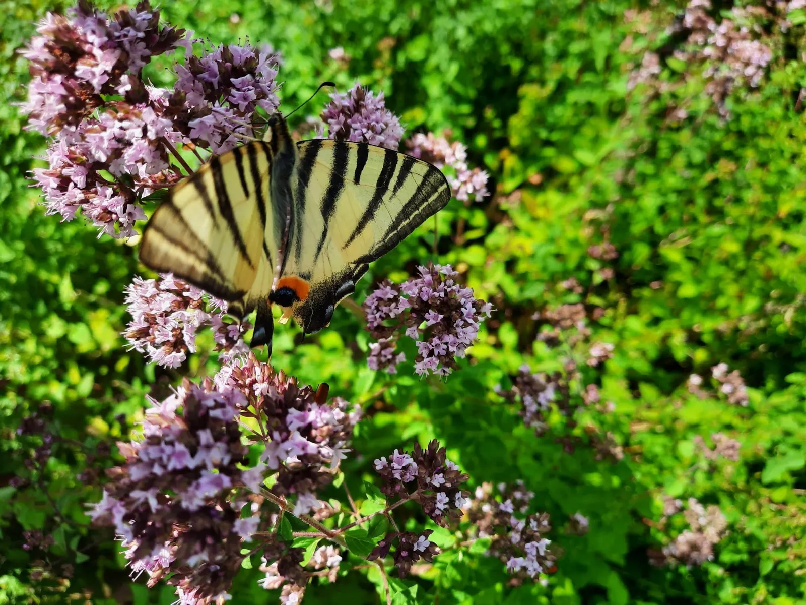
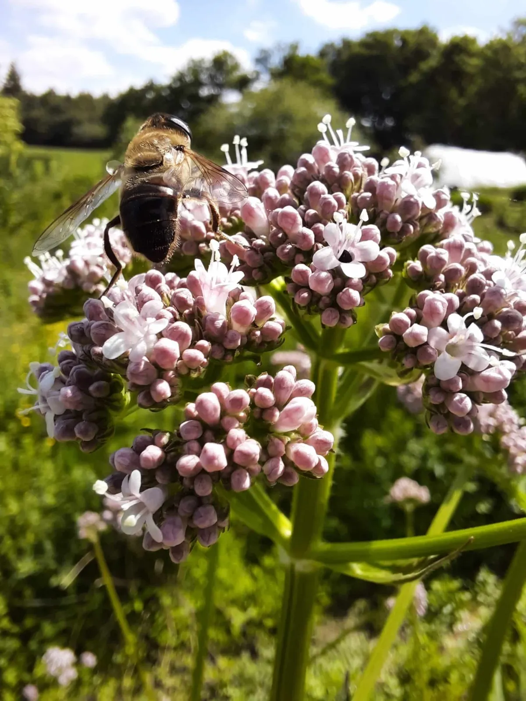
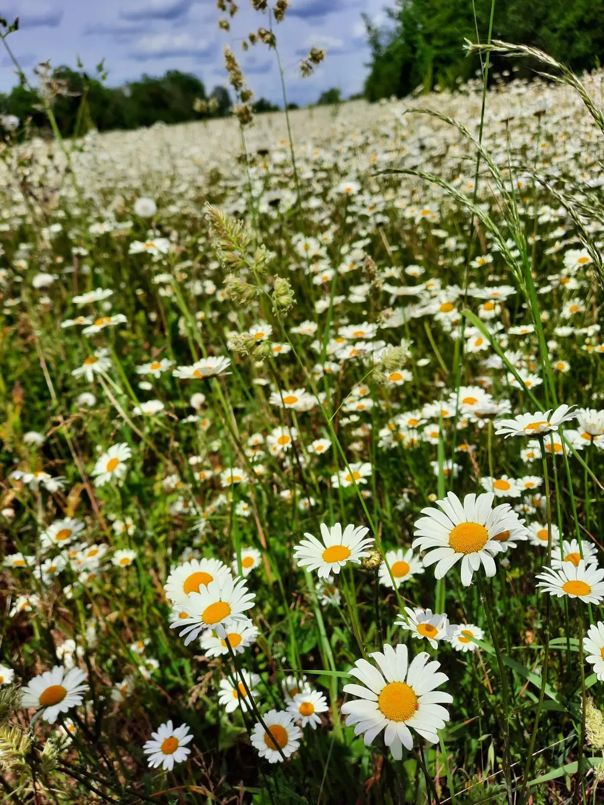
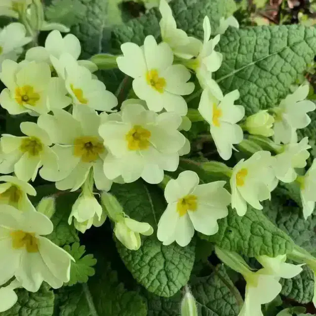

Les Pineaux, Vendée
Herboristerie paysanne, aux Pineaux, en Vendée
D'une graine au bien-être.
Ancrée au cœur de la nature vendéenne, Anne-Marie, paysanne herboriste spécialisée en botanique et formatrice, propose des plantes séchées et des produits à base de plantes aromatiques et médicinales cultivées à la main, certifiées bio, selon les savoirs ancestraux.
Vente directe à la ferme, uniquement sur rendez-vous.
- Certifiées bio, Ecocert FR-BIO-01
- Cultivées à la main, désherbage manuel
- Toutes les transformations à la ferme
- Membre de Vendée Flore Sauvage
- « Excellent » sur 10 avis Google
Boutique en ligne et vente directe
Nos produits
Des plantes ! Il y en a pour tous les goûts : tisanes, baumes, macérâts huileux, plantes sèches, extraits de bourgeons et de plantes, et bien d'autres encore.
Chaque produit est le fruit d'un travail minutieux, et toutes les transformations se font à la ferme.

Du jardin à l'atelier-
Plantes séchées et tisanes
Cultivées au jardin des fées ou cueillies à la main dans les champs, prairies et forêts alentour : aubépine, pissenlit, sureau, ronce, et bien d'autres trésors.
À la ferme -
Cosmétiques
Baumes nourrissants et apaisants, huiles précieuses, déodorant naturel, sérums visage revitalisants. Certifiés par Ecocert FR-BIO-01.
Voir la gamme- Baume douceur au calendulaFormat familial, 20,00 €
- Huile Belles gambettesConfort circulatoire, 8,50 €
- Baume Souffle des herbesConfort respiratoire, 12,50 €
-
Compléments alimentaires
La gamme est en ligne, avec ses prix.
Voir la gamme -
Alcoolature
Extraits de plantes, préparés à la ferme.
Voir la gamme -
Gemmothérapie
Extraits de bourgeons, préparés à la ferme.
Voir la gamme -
Synergies
À découvrir en ligne, ou à la ferme sur rendez-vous.
Voir la gamme
Aux Pineaux, en pleine nature vendéenne
Anne-Marie cultive bien plus que des plantes : une philosophie.
Celle d'un retour à l'essentiel, à l'écoute du vivant, dans une ferme à taille humaine baptisée avec poésie « Les Fées des Herbes ».
Issue d'une reconversion inspirée, sa passion pour les plantes médicinales et aromatiques s'incarne aujourd'hui dans une production artisanale, bio, respectueuse des cycles naturels et de la biodiversité. Semis bio ou graines des récoltes précédentes, boutures maison, désherbage manuel : les plantes sont exemptes d'intrants chimiques.
Pourquoi « Les Fées des Herbes » ?
Parce qu'au cœur de ce monde cartésien, Anne-Marie croit en la magie discrète de la nature. Elle imagine un monde féerique où des fées veillent sur chaque plante, chaque arbre, chaque insecte.

Le jardin des fées
Près de La Roche-sur-Yon, sur rendez-vous
Ateliers, visites et balades botaniques
Partez à la rencontre du petit peuple avec des histoires contées pour les familles, faites connaissance avec les plantes sauvages qui vous entourent. Pour quelques heures, venez découvrir le métier de paysan herboriste au cœur du jardin.
- Cueillir et cuisiner des plantes sauvages
- Fabriquer un baume ou un macérât huileux
- Semis, boutures, récoltes
- Concevoir une tisane de plantes cultivées et sauvages
- Découvrir la gemmothérapie
Les prochains ateliers
Pour connaître les prochaines dates, appelez Anne-Marie ou écrivez-lui : renseignements et réservations par téléphone ou par mail.

Les tarifs
- Balade découverte des plantes sauvagesPar personne, gratuit pour les moins de 10 ans
- 20 € / 2 h
- Groupe, à partir de 5 personnesPar personne
- 17 € / 2 h
- Balade contéeEnfants et accompagnants, par personne, 15 personnes au plus
- 5 € / 1 h
- Visite sensorielle commentéeSur réservation, par personne
- 8 €
Associations et amicales : déplacement possible, sur devis.
Production de fleurs sauvages, membre de Vendée Flore Sauvage
Marguerites, mauves, guimauves, ancolies, achillées, salicaires, pulicaires, fenouils, valérianes, consoudes, coquelicots…
Botaniste de terrain, Anne-Marie récolte des graines de fleurs sauvages locales pour reverdir les villages, les jardins et les espaces publics. Massifs, pieds de murs, bandes fleuries : sans arrosage intensif, sans traitement chimique, dans un esprit zéro phyto.
Formatrice, elle intervient auprès d'écoles et de centres de formation pour adultes. Elle propose aussi des inventaires de flore sur votre terrain, et vous accompagne dans son aménagement en tenant compte des plantes bio-indicatrices.


Excellent sur 10 avis publiés sur Google
« En plus d'une visite aussi merveilleuse que passionnante, Anne-Marie propose des produits d'une qualité unique. La magie opère ! »
Marion Blanchet
« De très bons conseils. Connaît parfaitement son métier et choix varié de produits en fonction des besoins de la clientèle. Produits 100 % naturels et locaux. »
Sarita49
« Une très belle rencontre, avec une passionnée de ses plantes aromatiques. Nous avons profité durant ces deux heures d'un moment de détente et d'un plaisir olfactif au milieu de toutes ces plantes. »
Xavier Tessaro